志乃ざきの歴史
昭和12年、女将・きくの名をとり「きくや」として創業。昭和16年頃から天然のうなぎを扱いはじめ、終戦後の昭和22年、うなぎ専門店としての営業がはじまりました。それが志乃ざきの原点です。
女将・篠崎きくの名をとり、食堂「きくや」として創業。
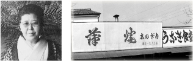
初代・源太郎が天然うなぎを捌きはじめる。間近でその包丁さばきを見ていた子供たちの真剣なまなざしが、今も語り継がれています。
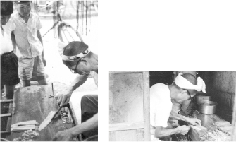
終戦後、うなぎ専門店としての営業がはじまります。これが志乃ざきの原点となりました。
店の改装が行われ、二代目・篠崎誠治の代へ。当時の店構えと現在を見比べると、受け継がれてきた面影が感じられます。
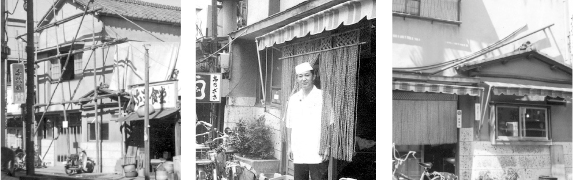
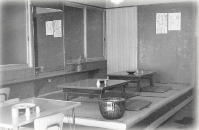
浅川の土手で、鰻への感謝を込めた供養をあげるように。この習わしは、今も毎年続けられています。
中央大学経済学部、服部学園を卒業後、料亭「つきぢ田村」に入社。常陸宮家・三笠宮家の出張料理人の一員としても活躍しました。
篠崎賢治が代表取締役に就任。有限会社志乃ざきを設立しました。
二店舗目となる志乃ざき吉祥寺店が開店。平成26年からは服部学園の特別講師も務めています。
公益財団法人食生活文化財団より、食生活文化賞を受賞しました。今も、三代にわたり受け継がれてきた味を、隅々まで拘った志乃ざき流で守り続けています。
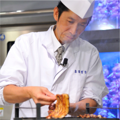
三代目当主
中央大学経済学部、服部学園を卒業。料亭「つきぢ田村」にて修業を積み、常陸宮家・三笠宮家の出張料理人としても活躍。平成11年、志乃ざき代表取締役に就任。令和元年、食生活文化賞受賞。
志乃ざきのこだわり
化学調味料は一切使用しません。信頼できる生産者から直接仕入れた素材だけで、志乃ざきの味はつくられています。
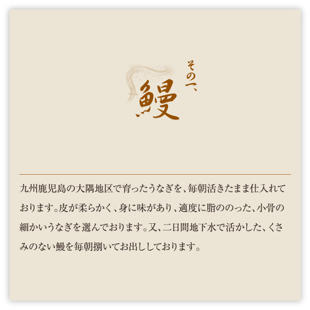
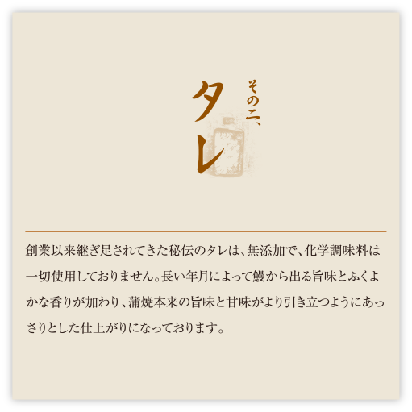
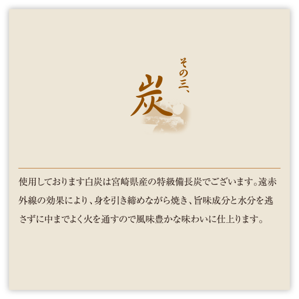
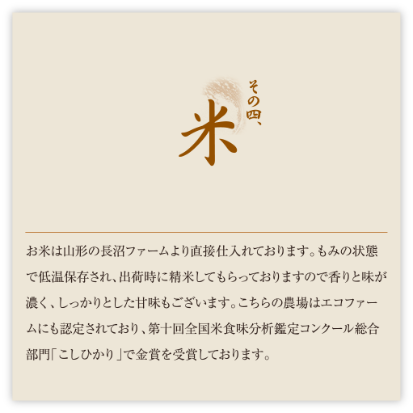
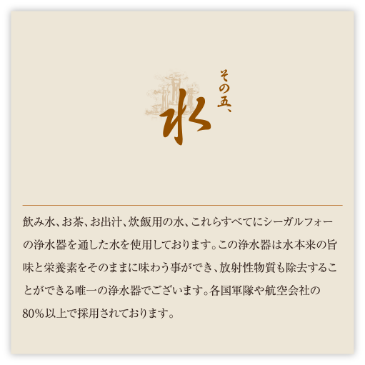
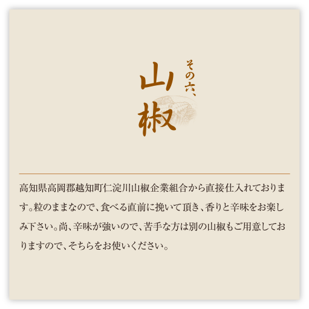
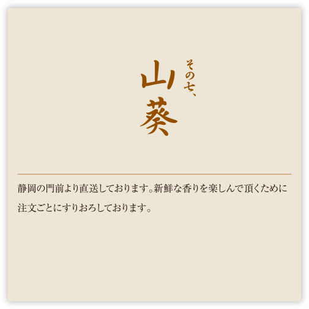
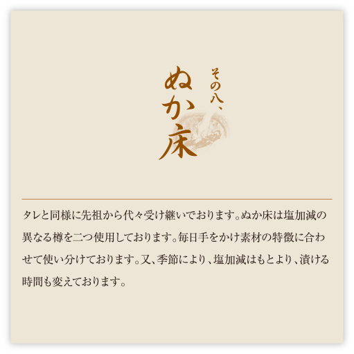
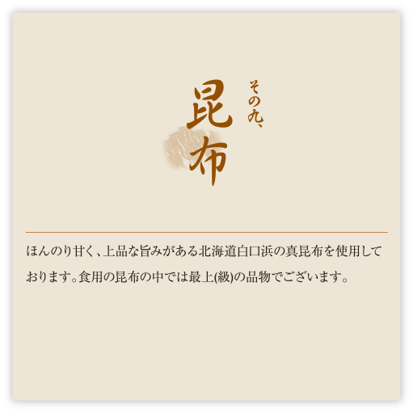
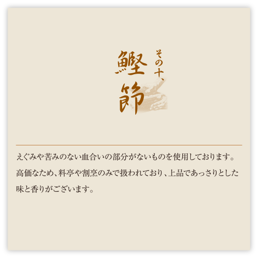
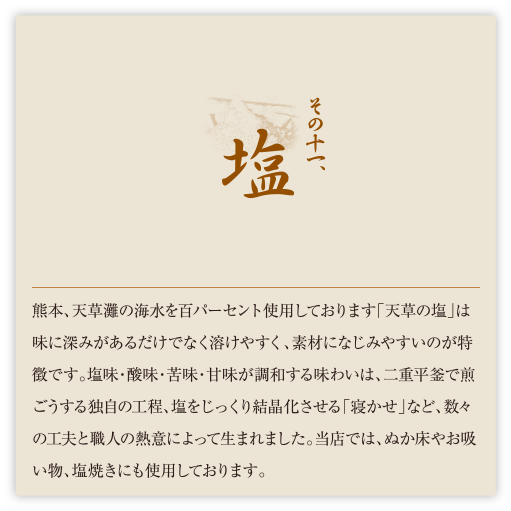
十一の約束。
産地のつながり